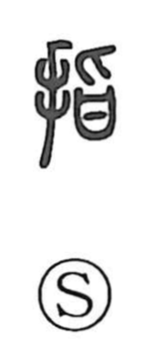

指

Kun: yubi, sasu | On: shi
finger ・ to point ・ to indicate
Explanation
A phono-semantic character: the hand/finger element combines with 旨 as the sound sign. In ancient form 旨 depicts cutting meat in a vessel with a small knife and thus came to mean delicious flavor. Shirakawa envisions the scene of a finger reaching out toward appetizing food, which naturally yields the senses “finger” and “to point.” From this core gesture of indicating, the character extends to uses such as naming the index finger (食指) and to broader acts of directing, showing, and picking out matters, as seen in compounds like 指揮, 指示, 指摘, and 指南.